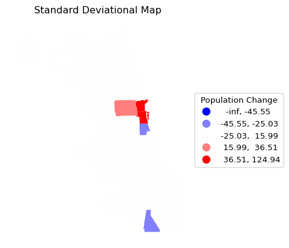
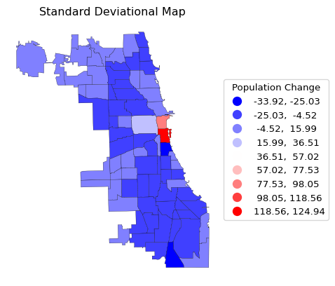

import geopandas as gpd
import matplotlib.pyplot as plt
from spatial_cluster_helper import ensure_datasets2 Creating Thematic Maps
In this Chapter, we briefly introduce functionality to create thematic maps with Python. This provides only a subset of the mapping capabilities in GeoDa (e.g., as illustrated in Chapters 4 to 6 of the GeoDa Explore Book), but it is sufficient to provide basic visualization for the examples considered in this companion.
There are many ways to create beautiful maps in Python, for example, using packages such as folium or plotly. Here, the plot functionality of geopandas is introduced, which is sufficient for most of our purposes. The functionality will be illustrated with the chicago_commpop and liquor sample data sets. In contrast to what is the case in the other chapters, the examples do not have a direct counterpart in the GeoDa books, since they are focused on the functionality in geopandas.
As packages, we will need matplotlib.pyplot and spatial-cluster-helper in addition to geopandas. Note that in the actual import statement used in the code, the relevant module is spatial_cluster_helper (underlines, not dashes).
Required Packages
geopandas, matplotlib.pyplot, spatial-cluster-helper
Required Data Sets
chicago_commpop, liquor
2.1 Preliminaries
2.1.1 Import Required Modules
Following standard practice, we import geopandas as gpd and matplotlib.pyplot as plt. In addition, we also use the ensure_datasets function from the spatial_cluster_helper module to load the data.
2.1.2 Load Data
To illustrate the examples, we assume that the data sets are in a ./datasets/ subdirectory of the main directory from which the code is executed. Alternatively, the path variable can be customized.
Before the data are read using the read_file command from geopandas, ensure_datasets is invoked with "chicago_commpop/chicago_commpop.shp" as the path for the shape file. If the files are not present in the designated path folder, they are downloaded and installed. If they are already present, nothing happens. In the examples below and in the other chapters, the sample data are installed in the proper directory so no downloading is illustrated.
Next, the input files are read into the GeoDataFrame chi_comm. The data set contains nine variables for the 77 community areas of Chicago. We will focus on the variable that gives the percentage change in population between 2010 and 2020, POPPERCH.
The same process is applied to the liquor store locations data set that is used to illustrate point maps. After ensure_datasets is invoked with "liquor/liq_Chicago.shp" as the shape file, the data are loaded in the GeoDataFrame point_df.
As is our customary approach, we specify all the files and variables in one place, so that it is easy to run the same set of commands for different data sets and/or variables. We load the data and provide a quick check of the contents.
# Setting working folder:
#path = "/your/path/to/data/"
path = "./datasets/"
# Select the Chicago community area data:
shpfile1 = "chicago_commpop/chicago_commpop.shp"
# Select the Chicago liquor store data:
shpfile2 = "liquor/liq_Chicago.shp"
# Load the datasets:
ensure_datasets(shpfile1, folder_path = path)
chi_comm = gpd.read_file(path + shpfile1)
print(chi_comm.shape)
print(chi_comm.head(3), "\n")
ensure_datasets(shpfile2, folder_path = path)
point_df = gpd.read_file(path + shpfile2)
print(point_df.shape)
print(point_df.head(3))(77, 9)
community NID POP2010 POP2000 POPCH POPPERCH popplus popneg \
0 DOUGLAS 35 18238 26470 -8232 -31.099358 0 1
1 OAKLAND 36 5918 6110 -192 -3.142390 0 1
2 FULLER PARK 37 2876 3420 -544 -15.906433 0 1
geometry
0 POLYGON ((-87.60914 41.84469, -87.60915 41.844...
1 POLYGON ((-87.59215 41.81693, -87.59231 41.816...
2 POLYGON ((-87.6288 41.80189, -87.62879 41.8017...
(571, 3)
id placeid geometry
0 0 ChIJnyLZdBTSD4gRbsa_hRGgPtc MULTIPOINT ((1161395.91 1928443.285))
1 3 ChIJ5Vdx0AssDogRVjbNIyF3Mr4 MULTIPOINT ((1178227.792 1881864.522))
2 4 ChIJb5I6QwYsDogRe8R4E9K8mkk MULTIPOINT ((1178151.911 1879212.002))For the polygon layers, the variable of interest is given as plotvar, which is set to POPPERCH. The point layer does not have a variable since just the location of the liquor stores is of interest.
plotvar = 'POPPERCH'2.2 Polygon Maps
Once the data is loaded as a GeoDataFrame, a basic plot function can be called from the object to show the polygons obtained from the shapefile:
chi_comm.plot()We can use any variable contained in the GeoDataFrame to create a choropleth map. Before delving into customization, the default choropleth map created by the plot function is illustrated. A bare bones implementation only requires the variable to be mapped (the argument column) and the argument legend = True. Without the latter, there will still be a map, but it will not have a legend, so there will be no guide as to what the colors mean. In the example, we will use the percentage population change, POPPERCH, contained in the just-created place-holder variable plotvar.
Note that population totals should be avoided in thematic maps. Any total such as population or housing units is a so-called spatially extensive variable. All else being the same, one would expect the values for such variables to be larger in larger areas, and thereby provide a false sense of importance. Instead, one should always aim to map spatially intensive variables, such as densities, percentages, per capita values, etc. Hence, we use percentage population change in the example instead of total population.
chi_comm.plot(column = plotvar, legend = True)2.2.1 Matplotlib Logic
The matplotlib library is extremely powerful and allows just about any type of customized visualization. It starts by setting up the basic parameters and then builds a graphic representation layer by layer. The terminology may seem a bit strange at first, but after a while, it becomes more familiar.
A plot is initialized by assigning some parameters to the tuple fig , ax. It is important to realize that fig is about the figure makeup and ax is about the actual plots. For example, fig is used to specify how many subplots there need to be, how they are arranged and what their size is. Since the examples used here and in later Chapters will mostly produce a single plot, the fig aspect can generally be ignored, and only ax is needed. In fact, for simple plots such as the maps in our applications, the specification of ax as such is not totally necessary and the plot function can be applied directly to the GeoDataFrame. However, in general, it remains good practice to refer to the plot object as ax in order to allow many further customizations.
An alternative way to set up the default map just shown is to explicitly assign it to an object ax, as ax = chi_comm.plot() with the same arguments as before. To remove the x-y coordinates and box around the map, the method set_axis_off() is applied to the ax object. Using this setup also removes any <Axes: > listing at the top of the graph. Otherwise, everything is still the same as before.
ax = chi_comm.plot(column = plotvar, legend = True)
ax.set_axis_off()2.3 Map Design Characteristics
The purpose of a choropleth or thematic map is to visualize the spatial distribution of a variable over areal units. Choropleth comes from the Greek choros, which stands for region, so it is a map for regions. For our purposes, the proper design of a map has three important characteristics, which each translate into arguments to the plot function:
classification
color
legend
2.3.1 Classification
Arguably the most important characteristic is the classification used, i.e., how the continuous distribution of a given variable gets translated into a small number of discrete categories, or bins. This is exactly the same issue as encountered in the design of histogram bins.
The assignment of observations to distinct bins is done by the mapclassify library, which is part of the PySAL ecoystem. However, this is implemented under the hood by geopandas so that no separate import statement is needed for mapclassify itself.
The classification is set by means of the scheme argument. Common options are Quantiles (for a quantile map), EqualInterval (for an equal intervals map), NaturalBreaks (for a natural breaks map), StdMean (for a standard deviational map), and BoxPlot (for a box map). All but the last two classifications require an additional argument for the number of bins, k. This is not needed for the standard deviational map and the box map, for which the breakpoints are derived from the data, respectively the standard deviation and the quartiles/hinge.
The default hinge for the box map is 1.5 times the interquartile range. Other values for the hinge can be specified by setting a different value for the argument hinge, but this is typically not necessary. It is important to note a major difference between the implementation of this option in the underlying mapclassify package and its operation as part of geopandas. In mapclassify, the argument is simply hinge, for example, hinge = 3.0. In geopandas, this argument must be passed as part of a special dictionary, classification_kwds. Specifically, to change the hinge value to 3 times the interquartile range would require the argument classification_kwds = {"hinge": 3.0}.
The default for the standard deviational map is to show all observations within one standard deviation below and above the mean as one category. To separate observations below and above the mean can be accomplished by setting the argument anchor to True. Again, this is done by means of the classification_kwds dictionary.
Full details on all the classifications available through mapclassify and their use in geopandas can be found at https://geopandas.org/en/stable/docs/user_guide/mapping.html# and https://pysal.org/mapclassify/api.html.
Each of the five cases is illustrated in turn. We again use the column argument to designate the variable to be mapped.
The placement of the legend is managed by means of the legend_kwds argument (similar in structure to classification_kwds). This is a dictionary that specifies aspects such as the location of the legend and how it is positioned relative to its anchor point. It also makes it possible to set a title for the legend, e.g., to set it to the variable that is being mapped.
In the examples, the following arguments are used: legend_kwds={"loc": "center left", "bbox_to_anchor": (1,0.5), "title": "<variable name>"}. This is not totally intuitive, but it works. See https://matplotlib.org/stable/api/_as_gen/matplotlib.axes.Axes.legend.html#matplotlib.axes.Axes.legend for details about the various legend customizations.
Also note that the map examples so far use the default color map. More appropriate color maps will be considered in Section 2.3.2.
2.3.1.1 Quantile Map
A simple six category quantile map is illustrated by setting scheme = "Quantiles" and k = 6. The legend_kwds arguments now also include a title. In addition, two ax methods are used for a minor customization: ax.set_title to give the map a title and, as before, ax.set_axis_off to get rid of the box with x-y coordinates.
ax = chi_comm.plot(
column = plotvar,
scheme = 'Quantiles',
k = 6,
legend = True,
legend_kwds = {"loc": "center left", "bbox_to_anchor": (1,0.5),
"title": "Population Change"}
)
ax.set_title("Quantiles")
ax.set_axis_off()2.3.1.2 Maps with a Set Number of Bins
Rather than repeating the single command for each type of map that needs the argument k, we construct a small loop that creates each in turn. This is accomplished by putting the name for the respective scheme in a list and using that same name as the map title. The three types are Quantiles, EqualInterval and NaturalBreaks.
schemek = ["Quantiles","EqualInterval","NaturalBreaks"]
for i in schemek:
ax = chi_comm.plot(
column = plotvar,
scheme = i,
k = 6,
legend = True,
legend_kwds = {"loc": "center left", "bbox_to_anchor": (1,0.5),
"title": "Population Change"}
)
ax.set_title(i)
ax.set_axis_off()
Note the contrast in the visualization of the spatial distribution between the different classifications. It is important to keep in mind that each map type has pros and cons. For example, the quantile map yields an equal number of observations in each category, but the range of the categories can vary subtantially, resulting in the grouping of very disparate observations. In the example, this is the case for the top category, which ranges from 1.8 to 124.9.
The range in an equal intervals map is the same for all categories, but as a result some bins may have very few or very many observations, as is the case here for the lowest bins.
Finally, a natural breaks map uses an optimization criterion (essentially equivalent to k-means on one variable) to determine the grouping of observations. Both the number of observations in each bin and the range of the bins is variable.
2.3.1.3 Maps with a Predetermined Number of Bins
The standard deviational map and box map have a pre-set number of bins, depending on, respectively, standard deviational units and quantiles/interquantile range. Again, they are illustrated using a small loop.
schemenok = ["StdMean","BoxPlot"]
for i in schemenok:
ax = chi_comm.plot(
column = plotvar,
scheme = i,
legend = True,
legend_kwds = {"loc": "center left", "bbox_to_anchor": (1,0.5),
"title": "Population Change"}
)
ax.set_title(i)
ax.set_axis_off()Both types of maps are designed to highlight outliers. In the standard deviational map, these are observations more than two standard deviations away from the mean, in the box map, the outliers are outside the hinge (1.5 times the interquartile range from the median). As mentioned, the defaults can be customized by setting a different value for the hinge through the classification_kwds argument. For example, selecting only the most extreme observations is achieved by setting classification_kwds = {"hinge": 3.0}, as illustrated below.
Note that since the bins are created based on deviations from the mean or median, the low ranges can start at -inf, which doesn’t really make sense.
ax = chi_comm.plot(
column = plotvar,
scheme = 'BoxPlot',
k = 6,
classification_kwds = {'hinge': 3.0},
legend = True,
legend_kwds = {"loc": "center left", "bbox_to_anchor": (1,0.5),
"title": "Population Change"}
)
ax.set_title("Box Map")
ax.set_axis_off()To avoid the negative bins, we can use the argument classification_kwds = {"anchor" : True} to ensure the lower boundary of the classification starts at 0 or the minimum value in the data. A standard deviational map with the categories below and above the mean shown is implemented with classification_kwds = {"anchor" : True}, as shown below.
ax = chi_comm.plot(
column = plotvar,
scheme = 'StdMean',
k = 6,
classification_kwds = {'anchor': True},
legend = True,
legend_kwds = {"loc": "center left", "bbox_to_anchor": (1,0.5),
"title": "Population Change"}
)
ax.set_title("Standard Deviational Map")
ax.set_axis_off()Whereas the first three types of classifications have a color scheme that suggests a progression from low to high values, a so-called sequential legend, the standard deviational map and box map focus on differences from a central value. This requires a color map that highlights the move away from the center, a so-called diverging legend. In the examples shown so far, the categories were visualized with the default sequential color map, which is not the best choice. The needed customizations are considered next.
2.3.2 Color Map
The color scheme for the map is set by means of the cmap argument. This refers to a matplotlib color map, i.e., a pre-determined range of colors optimized for a particular purpose. For example, this allows for a different color map to represent a sequential vs. a diverging legend.
The full range of color maps can be found at https://matplotlib.org/stable/users/explain/colors/colormaps.html.
For our purposes, a good sequential color map uses a gradation that goes from light to dark, either in the same color, such as cmap = "Blues", or moving between colors, such as cmap = "YlOrRd". For a diverging legend, going from one extreme color to another is preferred, e.g., dark blue to light blue and then to light red and dark red, as in cmap = "bwr", or even more extreme, as in cmap = "seismic".
Some examples are shown below.
ax = chi_comm.plot(
column = plotvar,
scheme = 'Quantiles',
k = 6,
cmap = 'Blues',
legend = True,
legend_kwds = {"loc": "center left", "bbox_to_anchor": (1,0.5),
"title": "Population Change"}
)
ax.set_title("Quantiles")
ax.set_axis_off()ax = chi_comm.plot(
column = plotvar,
scheme = 'Quantiles',
k = 6,
cmap = 'YlOrRd',
legend = True,
legend_kwds = {"loc": "center left", "bbox_to_anchor": (1,0.5),
"title": "Population Change"}
)
ax.set_title("Quantiles")
ax.set_axis_off()ax = chi_comm.plot(
column = plotvar,
scheme = 'BoxPlot',
cmap = 'seismic',
legend = True,
legend_kwds={"loc":"center left","bbox_to_anchor":(1,0.5), "title": "Population Change"}
)
ax.set_title("Box Map")
ax.set_axis_off()However, notice what happens when this is applied to the standard deviational map with cmap = bwr and the conventional classification (i.e., no anchor argument).
ax = chi_comm.plot(
column = plotvar,
scheme = 'StdMean',
cmap = 'bwr',
legend = True,
legend_kwds = {"loc": "center left", "bbox_to_anchor": (1,0.5),
"title": "Population Change"}
)
ax.set_title("Standard Deviational Map")
ax.set_axis_off()

This is not exactly what we had in mind. Other than the classification being strange, the community areas cannot be distinguished. The reason is that there is no borderline specified for the map. This final customization is considered next.
2.3.3 Areal Outlines
As mentioned, the full range of matplotlib customizations is available to manipulate legends, colors and placement. For our purposes, one more map-specific element is of interest. As seen in the previous examples, the border between polygons is not visible.
This can be fixed by setting the edgecolor and associated linewidth attributes. For example, with edgecolor = "Black" and linewidth = 0.2, the standard deviational map becomes somewhat more informative.
ax = chi_comm.plot(
column = plotvar,
scheme = 'StdMean',
cmap = 'bwr',
edgecolor = "Black",
linewidth = 0.2,
legend = True,
legend_kwds = {"loc": "center left", "bbox_to_anchor": (1,0.5),
"title": "Population Change"}
)
ax.set_title("Standard Deviational Map")
ax.set_axis_off()2.3.4 Saving the Map to a File
So far, the maps are generated in the interface, but are not separately available. To save a specific map to a file, the matplotlib.pyplot.savefig command is used (in our examples, abbreviated to plt.savefig). For example, to save the standard deviational map (or any other map) to a png format file, only the filename needs to be specified as an argument to plt.savefig. Optionally, to get higher quality figures, the number of dots per inch can be set by means of dpi.
This is illustrated for the standard deviational map where a border line is obtained as before by setting the thickness with linewidth = 0.2. The quality is set to dpi = 600.
The file will be in the current working directory.
ax = chi_comm.plot(
column = plotvar,
scheme = 'StdMean',
classification_kwds = {'anchor': True},
cmap = 'bwr',
edgecolor = "Black",
linewidth = 0.2,
legend = True,
legend_kwds = {"loc": "center left", "bbox_to_anchor": (1,0.5),
"title": "Population Change"}
)
ax.set_title("Standard Deviational Map")
ax.set_axis_off()
plt.savefig("popchange_stdmean.png", dpi = 600)

2.4 Mapping Polygon Boundaries
A map with just the community area borders is obtained with the boundary.plot command, where the color of the border line is controlled by edgecolor and the line thickness by linewidth, as before.
ax = chi_comm.boundary.plot(
edgecolor = "Black",
linewidth = 0.2,
)
ax.set_title("Community Area Boundaries")
ax.set_axis_off()
2.5 Mapping Point Data
So far, in this example, we used a shapefile containing polygon or areal spatial data. Alternatively, we can plot point data, which can be loaded the same way as before from a shapefile, or from a spreadsheet as a .CSV file.
In the following examples, we will use the location of liquor stores in Chicago, IL, contained in the point_df GeoDataFrame we loaded in Section 2.1.2.
As before, a simple visualization of the data can be obtained with the .plot function. Here, we add two optional arguments: markersize = 4 and color = 'blue', which control the size of the dots on the map and their color.
point_df.plot(markersize = 4, color = 'blue')2.5.1 Points with Polygons
The simple visualization of points in space lacks context and is often not that meaningful. One typically wants to show the points on a background of polygons, such as the Chicago community areas in this example. By using the ax parameter, it becomes straightforward to combine different graphs in one figure, in this case a point map and a polygon map. However, an important consideration is to make sure the two layers are in the same projection. As it turns out, in our example, they are not. In fact, the community areas are not projected (latitude-longitude decimal degrees), but the point data have a projection of UTM zone 16N.
Whereas an in-depth discussion of projections is well beyond our scope (for specifics, see Chapter 3 of the GeoDa Explore Book), it is useful to know that geopandas contains a simple way to synchronize the projections of two layers in the form of to_crs. In our example, we set the projection of the community areas to that of the point layer by means of chi_comm.to_crs(point_df.crs).
To overlay the points on the community areas, we can use the ax parameter in the plot() function to specify the same axes for both plots. We specify the size of the figure and then apply the plot function to the polygon layer (chi_comm) and the point layer (point_df) in turn. We just draw the outlines for the polygon map (as illustrated above) with a customized linewidth and use markersize and color for the points.
The result is a map of the liquor locations overlayed on the community area outlines.
# Converting the layers to the same projection (CRS)
chi_comm = chi_comm.to_crs(point_df.crs)
# Plotting the figure with both layers
fig, ax = plt.subplots(figsize = (6, 8))
chi_comm.boundary.plot(ax = ax, edgecolor = 'black', linewidth = 0.5)
point_df.plot(ax = ax, markersize = 4, color = 'blue')
ax.set_title("Liquor Stores in Chicago's Community Areas")
ax.set_axis_off()
plt.show()2.6 Practice
Use your own data set or one of the GeoDa Center or PySAL sample data sets to load a spatial data frame and experiment with various map types, color schemes and other customizations. Save each map to a file for inclusion in papers, reports, etc.